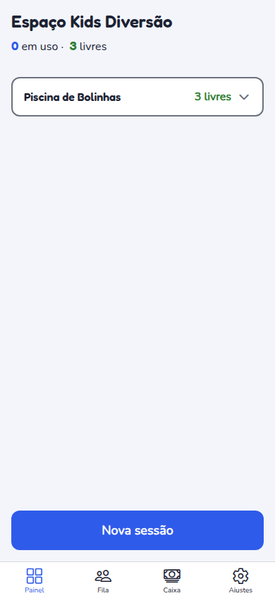
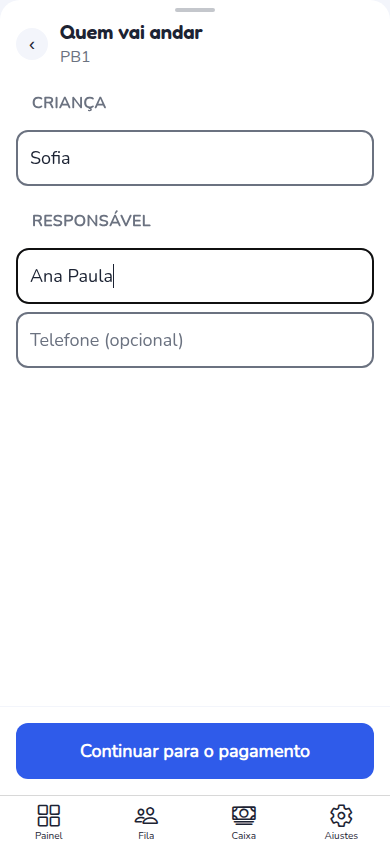
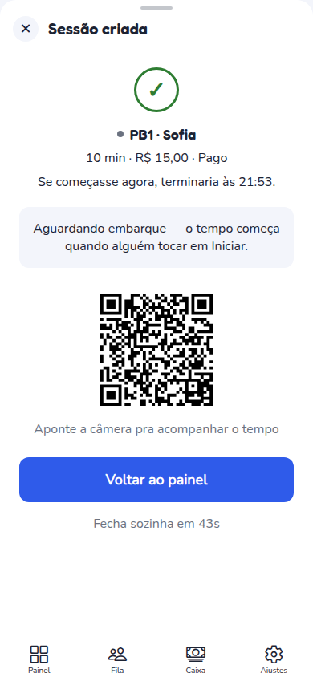
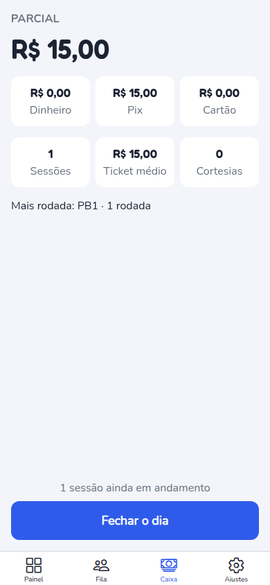
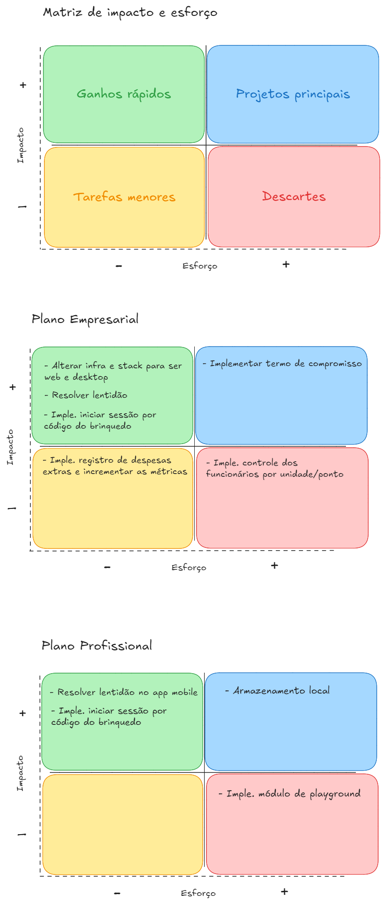

Estudo de caso
KidooPlay: tirar o caderno de papel do quiosque
Quiosques de shopping e praça alugam patinetes, carrinhos e motos infantis por tempo. Quem opera anota sessão, pagamento e fila num caderno, e o prejuízo aparece no fim do dia. O KidooPlay é o app que registra cada sessão cronometrada, a frota e o caixa no mesmo lugar.




Telas com dados fictícios.
O problema
O ciclo da operação é pedir, pagar, liberar, contar e recolher. No caderno, o registro vem depois da criança já estar no brinquedo, e às vezes nem vem. Quem fica na mesa não vê o que saiu, o tempo excedente não é cobrado e o dono só descobre a perda ao conferir o caixa.
Defini o critério de sucesso do produto como uma operadora passar um dia inteiro sem caderno e fechar o caixa pelo app. Tudo que não ajuda uma sessão cronometrada a ser criada, acompanhada, encerrada e relatada não é núcleo.
Para quem
- Operadora/dona do quiosque: na mesa, com fila na frente e barulho. Fecha o caixa no fim do dia.
- Equipe de praça: em pé, sob sol, com dois segundos de atenção. Consulta o mesmo app com outro papel.
- Responsável pela criança: paga e responde pelo uso. Nunca chamado de "cliente" no produto, porque o termo se confunde com quem compra o app.
O que aconteceu no primeiro teste de campo
O primeiro teste numa operação real (fim de agosto de 2026) falhou. Antes de mexer em tela, fiz um diagnóstico para separar o que era produto do que era infraestrutura. A conclusão foi que o código estava bem e a infraestrutura não existia:
- O que estava no ar era a pasta de build da minha máquina de desenvolvimento, exposta por um túnel. Se a máquina dormisse, o app caía.
- O build publicado tinha seis dias e faltavam as funções mais recentes.
- Oito migrações do banco de produção nunca tinham sido aplicadas, e isso quebrava o Pix inteiro.
- Só a criação de sessão funcionava sem internet. Cadastrar brinquedo, fechar caixa e entrar na fila morriam sem rede, e na praça o sinal 4G falha.
O que fiz em seguida: um ambiente de homologação e outro de produção com bancos separados, deploy automático com testes como portão, backup noturno criptografado e restauração testada. Pouco depois descobri outro erro, que também ficou registrado: a homologação tinha servido o banco de produção por quatro dias, por falta de um build separado. Corrigi com um script de build por ambiente.
Aprendizado: um teste de campo que falha não prova que a ideia está errada. Primeiro descubra qual camada falhou. Aqui, consertar a infraestrutura valia mais do que qualquer funcionalidade nova.
O que a observação em campo mudou
Numa visita à operação (18/09) vi que não existia processo: a criança pega o brinquedo primeiro e o registro vem depois, chegam a sair três brinquedos ao mesmo tempo e quem atende na mesa também atende a praça. Desse registro saíram três princípios, que viraram critério de aceite:
- Iniciar uma sessão tem que ser mais rápido que anotar no caderno. Se não for, o caderno volta.
- O app nunca trava o que já está acontecendo. Ele registra o que aconteceu e, com isso, passa a ser o processo que o negócio não tem.
- Serve o negócio desorganizado e o organizado, com um fluxo só. Sem "modo" para cada um.
Uma decisão fechada antes mudou por causa disso: o nome da criança era obrigatório e passou a ser opcional, com um código gerado no lugar. Já o pagamento pendente continua exigindo identificar o responsável, porque a dívida precisa de alguém por trás.
Lentidão: medir antes de consertar
Duas operadoras relataram lentidão. Em vez de otimizar às cegas, montei um roteiro de medição (rede e CPU limitadas, simulando celular simples e sinal ruim da praça) e defini uma meta antes de mexer no código.
| Medida (criar uma sessão, 3G ruim) | Antes | Meta |
|---|---|---|
| Espera total para criar uma sessão | 11,4 s | até 4 s |
| Requisições ao servidor no roteiro | 72 | uma por atualização do ponto |
| Passos acima de 1 s | 5 de 8 | cada passo até 1 s, média até 0,5 s |
| Rede "pendurada" (Wi-Fi sem internet) | 84,5 s | não esperar o servidor |
A etapa foi entregue em produção em outubro. O documento de medição guarda o "antes" e a meta; a comparação com o "depois" ainda vou publicar quando refizer a medição, e prefiro não escrever um número que não medi.
Preço: a conta que descartou o desconto
A pergunta da primeira venda é "quanto custa". Pesquisei a concorrência (dois concorrentes de nicho, em torno de R$ 50 por mês, nenhum com várias unidades) e o preço da sessão no Nordeste (R$ 25 a R$ 35 por 15 minutos).
Com premissas conservadoras (5 unidades, 25 sessões por dia, R$ 30 por sessão, 26 dias), o faturamento do cliente passa de R$ 19 mil por mês, e a mensalidade de R$ 50 representa cerca de 0,26% disso. Concluí que preço não era a barreira, e sim credibilidade. Baixar o preço convidaria uma guerra que uma empresa com poucos clientes não aguenta, e preço de tabela baixo é difícil de reverter, enquanto encerrar uma promoção não custa nada.
Essas premissas são estimativas marcadas "a confirmar em campo" no documento original.
A restrição real era capital. O custo em dinheiro era de cerca de R$ 123 por mês, então a distribuição foi desenhada em degraus: PWA e APK direto no primeiro, Google Play quando houver dois ou três clientes pagando, App Store só quando um cliente iOS pagar a taxa anual.
Dois clientes, dois produtos, um código
Conversei com duas operações bem diferentes. Uma opera a frota e quer rapidez no celular. A outra tem várias unidades, paga hoje um sistema de terceiros e pede acesso pela web, caixa consolidado e termo de compromisso. Nenhuma das duas era o plano que eu tinha desenhado, e isso reorganizou o produto em três planos:
| Plano | Para quem | Preço |
|---|---|---|
| Início | Quem está começando | Grátis, com teto de 150 sessões |
| Profissional | Quem opera a frota pelo celular | R$ 49 por mês |
| Empresarial | Redes e franquias com várias unidades | R$ 149 por mês com 2 pontos |
O Empresarial é onde está o esforço, porque redes e franquias crescem a partir dele. Os planos moram no banco, e não em um segundo projeto: um único código serve ao app Android e à web instalável.
Roteiro de produto e o que ficou de fora
O roteiro tem nove etapas, ordenadas por impacto e esforço e reordenadas em 05/11 depois da validação manual. Regras que impus a mim mesma:
- Uma etapa por vez, e só a etapa atual ganha spec. Nada de esboçar especificações das etapas seguintes.
- Cortar de propósito: o redesenho do financeiro ficou "na gaveta" até o lançamento, e o rastreio de brinquedo por GPS foi declarado fora de escopo, porque a responsabilidade pode ser registrada sem hardware.
- Vocabulário fechado, vindo do campo: "sessão" e nunca "volta"; "A recolher"; "Receber tudo". O termo que a operação usa vence o do documento.
- O relógio nunca encerra sozinho. Só uma pessoa confirma que o brinquedo voltou.

Hipóteses e o que já sei sobre elas
| Hipótese | Como estou testando | Situação |
|---|---|---|
| Se iniciar uma sessão for mais rápido que anotar no caderno, a operadora abandona o caderno. | Sessão rápida por código (próxima etapa), comparando o tempo de criar a sessão com o do caderno. | Aberta. Ainda não implementada. |
| Preço não é a barreira; credibilidade é. | Conta de valor (0,26% do faturamento) e pesquisa de concorrência. Falta uma venda aberta pelo checkout (etapa 6). | Parcial. Raciocínio feito, sem teste de venda. |
| Existem dois compradores distintos: quem opera a frota e a rede com várias unidades. | Conversas com uma operação de cada perfil. | Indício. Só duas conversas, então não generalizo. |
| O excedente cobrado paga a assinatura e sustenta a retenção. | O excedente já é calculado e agora pode ser cobrado, perdoado ou visto como "não faturado". | Aberta. Implementado, ainda não medido. |
Métricas
- Métrica principal (definida): uma operadora passa um dia inteiro sem caderno e fecha o caixa pelo app.
- Métrica de apoio (definida e medida só no "antes"): tempo para criar uma sessão em rede ruim. Era de 11,4 s e a meta é 4 s.
- O que ainda não tenho: números de uso (sessões por dia, retenção por operação). O app já registra eventos de uso, mas ainda não analisei esses dados para publicar, e por isso este caso não traz nenhum.
Como entrego
Mais de 50 specs de implementação com casos de uso numerados, 15 sprints registradas num painel de estado e regras de negócio em TypeScript puro, testadas sem depender de banco. O isolamento entre empresas é feito no banco (RLS), e não em filtro de tela. Cada entrega passa por revisão de segurança e por QA em homologação contra os critérios de aceite antes de eu validar à mão.
O que aprendi
- Teste de campo que falha precisa de diagnóstico por camada antes de virar roadmap.
- Dois clientes reais já bastam para segmentar produto e preço, desde que sejam de perfis diferentes.
- Em operação frenética, cada toque a mais pesa tanto quanto a lentidão da rede.
- Uma medição "depois" faz parte da entrega, e é um item que ainda me falta fechar aqui.